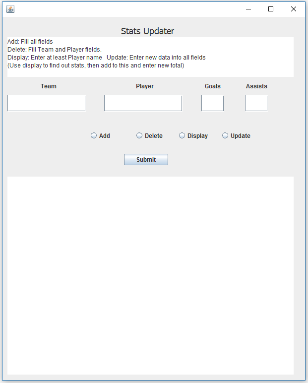

For my project I decided to do a client based stats updater that a small sports league could use to keep track of goals, teams, and assists of players. The Client consists of 4 fields for the Team, Player, Assists, and Goals. Underneath these fields are 4 radio buttons and a submit button. The way the code works is a function is selected and submitted sending data to the clien-servlet connector and then to the servlet. The servlet does all of the SQL queries and returns the data. The client then either prints in the text pane the data that was added, deleted updated or displays the stats of the player requested. Certain restrictions are in place to ensure that certain fields must have data entered in order to start a function. This is to keep data stores from being corrupted as it is very easy for SQL to update an entire database's column's with wrong information.
The client was made up using eclipse's windowbuilder plugin. Originally I was using netbean's built in GUI builder but I found the actual source code it created to be too messy and I am not very familiar with netbeans so I switched to eclipse. The rest is just edited code provided by Dr.Siegel. The functionality is as such: The client takes several arguments and then applies them to a switch case before calling the client servlet connector which then calls the servlet. The client also consists of many if statements which block certain entries if the certain fields do not contain or do contain values.
Not much goes on in ServletConnect. It receives the values passed from ClientWindow, sets up a URI connection and encodes the values to the Servlet
This is where really all of the stuff goes on. The servlet decodes the values passed from ServletConnect.java. Then, depending on the function passed through executes an SQL query, modifies the database, builds a string and returns it back to the client to display.